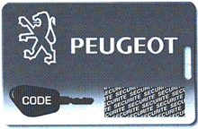
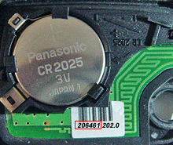

When matching new keys to the car, all keys - old and new - MUST be to hand for programming. Every key needs to be re-programmed. On Peugeot 607 is it also necessary to program the remote control codes into the central control unit (BSI). The remote control code is stated on a note on the printed circuit board in respective remote control. A security code must be entered before it is possible to program keys and remote controls. This code is stated on a card in the vehicle documents. After the programming must a syncronisation of the remote controls be performed.
Observe:
If one of the remote control buttons is activated when the remote control is not synchronized will the body computer ( BSI ) switch to antiscanning mode for one minute. When the body computer ( BSI ) is in antiscanning mode a re-synchronization must not be performed.
Performance (Entering the security code)
Read out, repair and erase fault codes.
Collect together all the keys and remote controls that are to be re-programmed/used with the vehicle.
Scratch the card to reveal the security code.

Enter the security code as shown on the code card in the entering field under the function: Enter security code (XXXX), press OK.
A dialog box confirms: Operation succeded/failed.
Performance (Programming of keys)
Enter the number of keys to be programmed in the entering field under the function: Enter number of keys (1 - 5), press OK.
Follow the instructions in the automatic sequence as follows.
Performance (Programming of remote controls)
Enter the number of remote controls to be programmed in the entering field under the function: Enter number of remote controls (1 - 5), press OK
Enter the codes for respective remote control in the entering field as follows (6 signs) and confirm with OK.

A dialog box confirms: Operation succeded/failed.
Performance (Syncronisation of remote controls)
Switch off ignition and remove the key. Wait one minute without pressing any button on the remote control.
Insert the key and switch on the ignition. Within 10 seconds, press the locking button in 5 seconds.
Switch off ignition and remove the key.
Repeat this procedure from step 2 with all remote controls.
Wait 30 seconds before testing the remote controls.